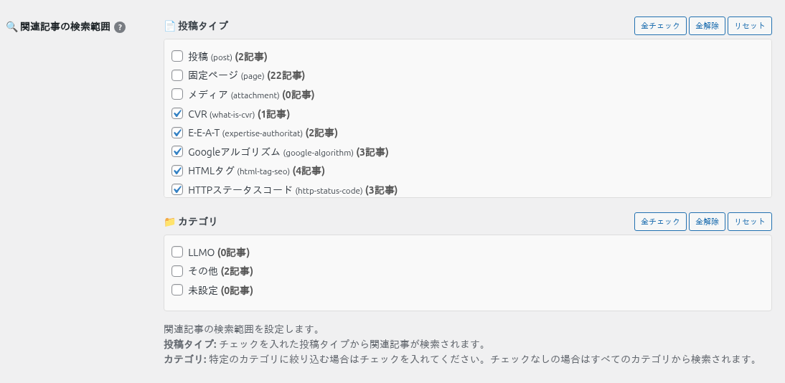
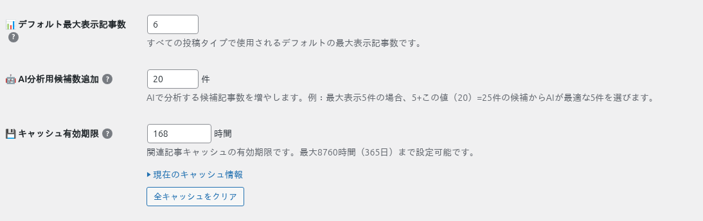
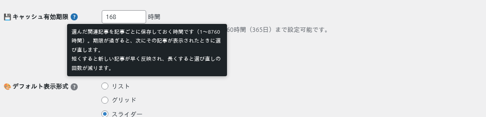
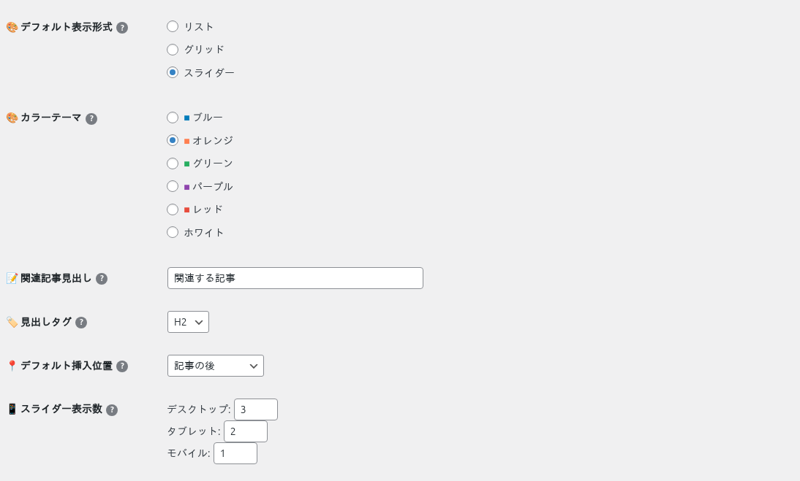
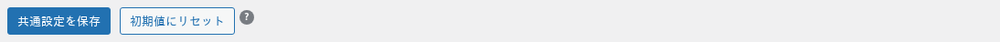

共通設定
「🌐 共通設定」タブでは、サイト全体の初期値を決めます。投稿タイプ別のカスタム設定や記事ごとの設定が無いところで、この値が使われます。
このページの内容
変えても、保存済みの記事には効かないことがあります
記事を編集画面で保存すると、そのときの設定値が記事に残ります。共通設定を変えても、記事に残った値のほうが優先されます。変えた値を既存の記事に効かせる方法は「設定の優先順位と反映」を見てください。
関連記事の検索範囲（関連記事に選ぶ記事の範囲）

どの記事を関連記事の候補にするかを決めます。関連記事を表示するページを決める設定ではありません（表示するかどうかは記事ごとの「この記事で関連記事を表示する」で決まります）。
| 項目 | 説明 |
|---|---|
| 📄 投稿タイプ | チェックした投稿タイプの記事だけが候補になります。たとえば「ブログ」だけにチェックすると、関連記事欄にはブログの記事しか出ません。 |
| 📁 カテゴリ | チェックしたカテゴリの記事だけが候補になります。何もチェックしなければ全カテゴリが対象です。 |
| 全チェック / 全解除 / リセット | チェックをまとめて入れる・外す・保存済みの状態に戻すボタンです（保存は「共通設定を保存」で行います）。 |
件数とキャッシュ

| 項目 | 説明 | 初期値 |
|---|---|---|
| 📊 デフォルト最大表示記事数 | 1 つの記事に表示する関連記事の数です（1〜20）。 | 5 |
| 🤖 AI分析用候補数追加 | GPT を使う方式で、GPT に渡す候補を表示件数より何件多くするかです。例：表示 5 件・この値 20 なら、25 件の候補から GPT が 5 件を選びます。「意味の近さで選ぶ」では使いません。 | 20 |
| 💾 キャッシュ有効期限 | 選んだ関連記事を記事ごとに保存しておく時間です（1〜8,760 時間＝365 日）。期限が過ぎると、次にその記事が表示されたときに選び直します。「▶ 現在のキャッシュ情報」で、投稿タイプごとのキャッシュ数を確認できます。 | 24 時間 |

見た目と挿入位置

| 項目 | 説明 | 初期値 |
|---|---|---|
| 🎨 デフォルト表示形式 | リスト・グリッド・スライダーから選びます（見本は「表示形式とカラーテーマ」）。 | リスト |
| 🎨 カラーテーマ | 見出しの線やボタンの色です。ブルー・オレンジ・グリーン・パープル・レッド・ホワイトの 6 色。 | ブルー |
| 📝 関連記事見出し | 関連記事欄の上に出す見出しの文字です。 | 関連記事 |
| 🏷️ 見出しタグ | 見出しの HTML タグです（H2・H3・H4・DIV）。記事の見出しの階層に合わせて選びます。 | H2 |
| 📍 デフォルト挿入位置 | 関連記事を本文のどこに自動で入れるかです。記事の前・記事の後・最初の段落の後。 | 記事の後 |
| 📱 スライダー表示数 | 表示形式がスライダーのとき、一度に見せる記事の数です（デスクトップ 1〜6、タブレット 1〜4、モバイル 1〜2）。 | 3 / 2 / 1 |
保存とリセット

| ボタン | 説明 |
|---|---|
| 共通設定を保存 | このタブの値を保存します。 |
| 初期値にリセット | このタブの値を初期値に戻します。APIキーと投稿タイプ別のカスタム設定はそのままです。 |